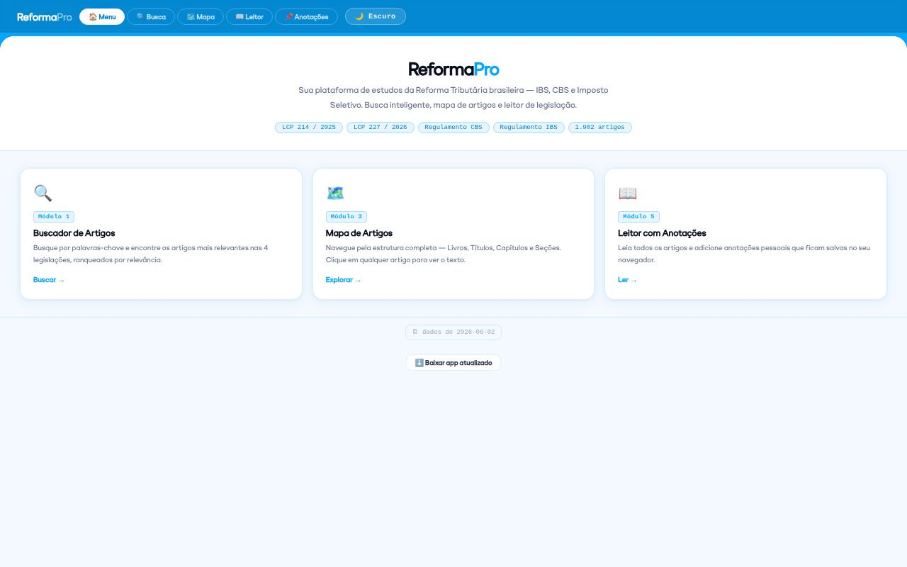

ReformaPro
Plataforma de estudos da Reforma Tributária brasileira (IBS, CBS e Imposto Seletivo) que roda 100% no navegador.
- 1.902 artigos da LC 214/2025, LC 227/2026 e Regulamentos do CBS e do IBS, mais as Notas Técnicas da NFS-e
- Busca ranqueada por relevância, mapa da estrutura (Livro › Título › Capítulo) e leitor com anotações salvas no navegador
- Pipeline em Python que baixa a legislação do Planalto, monta o índice e guarda versões datadas, acionado por GitHub Actions
HTML/CSS/JS puroPythonBeautifulSoupGitHub ActionsGitHub Pages